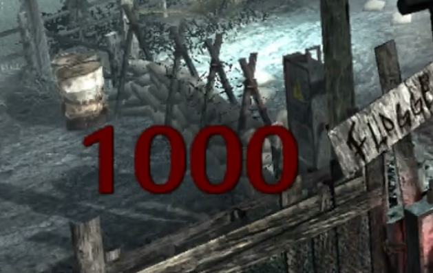
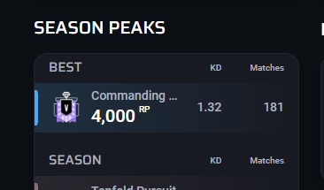
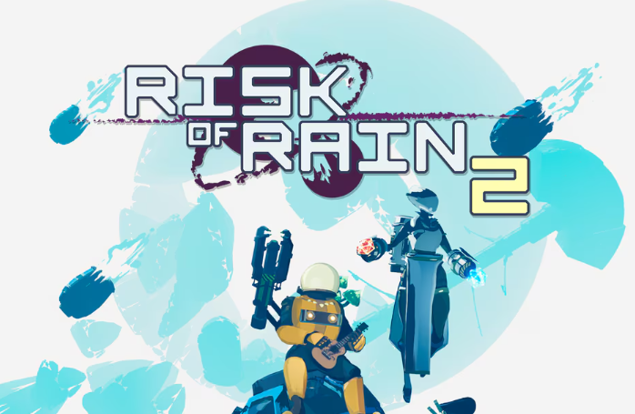
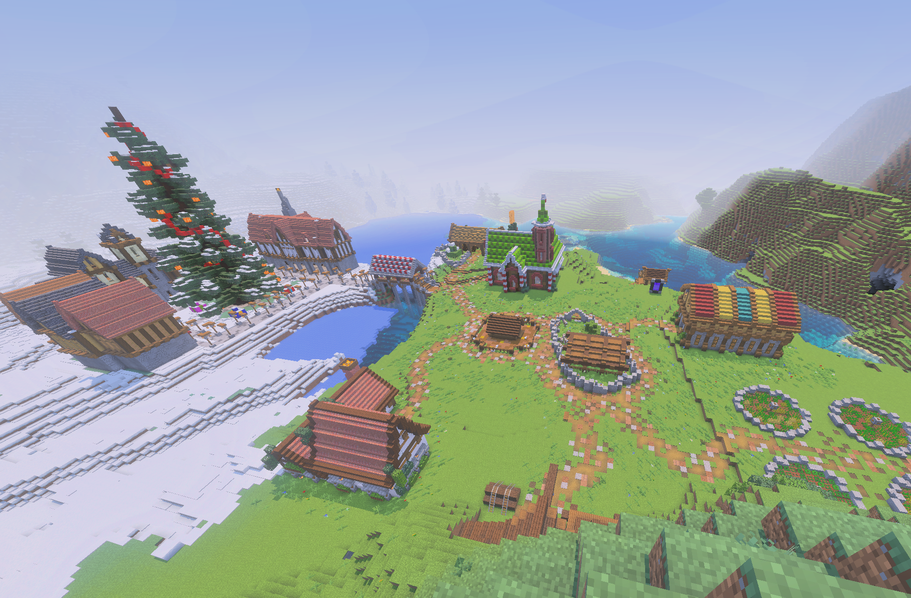
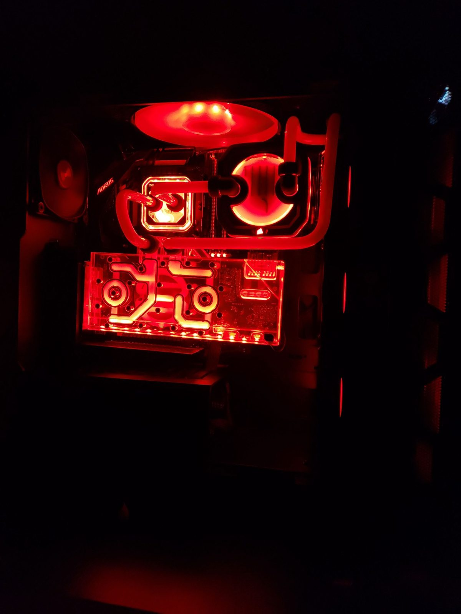
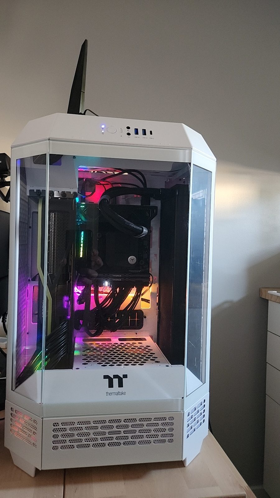

I love building PCs, competing in games, and exploring story-driven adventures!

I love speed running and my favorite record is my round 1000 on the original World at War Shi No Numa.
Check out my leaderboard achievements: View Records

I play many competitive games such as Rainbow Six Siege, Overwatch, and Rocket League.

I also enjoy story-driven / single player games like Risk of Rain 2, God of War, and Baldur’s Gate 3 in my free time.

Who doesn't love to play Minecraft?
I’ve built over 10 PCs with my brother-in-law, but these are some of my most recent and favorite builds:

This was my first ever custom water cooling loop. It took me and my brother-in-law quite some time to bend each tube; however, I am more than happy with the outcome!

This was my second to last PC. I now have the same case but upgraded to a MSI Project Zero B650, 7800x3d, and 9700xt.